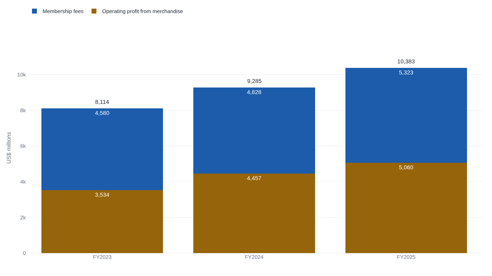

Costco's membership fees produced most of its operating profit for three straight years
Costco's merchandise business cleared an 11.12% gross margin in fiscal 2025. Membership fees, which carry almost no cost of their own, supplied the majority of operating income in each of the last three fiscal years, sliding from 56 percent to 51.
Why this matters
The last two lessons in this course used two numbers from Costco's income statement without asking where they came from. Lesson 1 traced $8.1 billion of net income down to $13.3 billion of cash from operations. Lesson 2 opened the balance sheet that reconciliation depended on. Both leaned on the statement that produced net income in the first place, the one that turns revenue into a profit figure, without ever opening it. This lesson opens it: what a business counts as revenue, what it subtracts on the way down, and what is left at each stopping point. Costco is again the example. Its own filing shows something a single profit figure hides: two businesses can report the same net income and earn nearly all of it from completely different sources, one from what it sells, the other from what it charges people to shop there. The question that matters more than the size of the profit is where inside the statement it actually originates, and how easily a competitor could take that source away.
- 01
- Costco owed more within a year than it owned in fiscal 2024: the balance sheet account, deferred membership fees, that this lesson turns into revenue.
- 02
- Net income is not the cash a business generates: the net income figure this lesson traces back to where it is produced.
The three lines that turn revenue into gross profit
An income statement measures a stretch of time, a fiscal year, not a single instant the way a balance sheet does. It opens with revenue, what a business earns from its ongoing, central operations, and then subtracts costs in stages until nothing is left to subtract.1 Costco's fiscal 2025, the year ended August 31, 2025, is the same year the last two lessons used. Its income statement opens with $275,235 million of total revenue. That figure is made of two pieces: $269,912 million of net sales, the goods rung up at checkout, and $5,323 million of membership fees, what a member pays for the right to shop there at all.2
Cost of goods sold is what a business spent to acquire or produce what it sold.1 Costco calls its version merchandise costs, and defines it to include the purchase price of the inventory it resells plus the inbound and outbound shipping and handling required to move it.3 The same line also absorbs Costco's depot, fulfillment, and manufacturing operations, along with certain in-store costs, like fresh-foods labor, depreciation, and utilities.3 In fiscal 2025 merchandise costs were $239,886 million.2 Subtract that from net sales and what remains is gross profit, the money left once the inventory itself is paid for: $269,912 million minus $239,886 million is $30,026 million. Costco's own statement does not run membership fees through this subtraction at all. Merchandise costs are matched only against the goods sold, so the gross-profit line that follows is a merchandise number, not a whole-company one.
Eleven cents on every merchandise dollar
Divide gross profit by net sales and the result is the gross margin ratio: the share of every sales dollar left after paying for the goods themselves.4 Costco's merchandise gross margin in fiscal 2025 was 11.12 percent, $30,026 million of gross profit on $269,912 million of net sales.2 That means that of every $100 a member spends on groceries, gas, or a case of paper towels, roughly $11 remains before Costco pays rent, wages, and anything else it costs to run a warehouse. That is thin, and Costco says so about itself: its own filing states that it operates "profitably at significantly lower gross margins (net sales less merchandise costs) than most other retailers."5 Reselling merchandise this cheaply is the plan, not an accident of scale it happened into. A member comparing Costco's shelf price against a supermarket's is comparing against a business that has chosen to keep about eleven cents of gross profit on every merchandise dollar and to compete on that thinness.
A fee collected before the year is served
Membership fees follow different accounting entirely. Costco collects a member's payment for the coming year up front, but records the fee as revenue gradually, spread evenly across the twelve months of that membership as it is earned.3 What it does not do, at any point, is match inventory cost against that fee. Merchandise costs, by Costco's own definition, include the purchase price of goods and the shipping needed to shelve them.3 A membership renewal touches no inventory at all. Of the $5,323 million Costco collected in membership fees in fiscal 2025, essentially none of it was offset by a cost of goods sold line, because there were no goods to cost.2 Reselling a case of paper towels at an eleven percent margin and renewing a membership card are different acts on the same income statement. One moves a physical good through a warehouse at a thin markup. The other is a fee for continued access, already paid, that costs almost nothing further to deliver.
Splitting the $10.4 billion of operating income
Gross profit still has to cover the costs of running the business itself, everything from wages to rent to advertising, none of it tied to a specific unit sold. Subtract those operating expenses from gross profit and what remains is operating income, the profit a business's core operations produce before financing costs and taxes.6 Costco reports that expense line as selling, general, and administrative expense, $24,966 million in fiscal 2025.2 Costco's income statement does not report a merchandise-only operating profit, but its own numbers allow one to be built. Take the $30,026 million of merchandise gross profit, subtract the $24,966 million of operating expenses, and $5,060 million of operating profit is left over from selling merchandise alone. Add the $5,323 million of membership fees, carrying almost no cost of their own, and the total is $10,383 million, which is exactly the operating income Costco reported.2 The two streams land in the same total because they are the same total, only split apart here by where each dollar came from.
| Component | Amount | Where it comes from |
|---|---|---|
| Merchandise gross profit | 30 026 | Net sales less merchandise costs. |
| Less: SG&A | −24 966 | Operating costs charged against that profit. |
| Operating profit, merchandise | 5 060 | What selling goods contributed to operating income. |
| Membership fees | 5 323 | Collected fees, almost no matched cost. |
| Total operating income | 10 383 | The figure Costco reports on one line. |
The split holds up across three fiscal years
One year's split could be a coincidence of that year's numbers. Costco's own filing carries the same statement, in the same form, for two years before fiscal 2025, so the same arithmetic runs on fiscal 2023 and fiscal 2024 without any new assumption.2 In fiscal 2023, merchandise gross profit of $25,124 million less $21,590 million of SG&A left $3,534 million of operating profit from merchandise. Adding $4,580 million of membership fees reaches $8,114 million, Costco's reported operating income that year. In fiscal 2024 the same steps run $27,267 million less $22,810 million to $4,457 million, plus $4,828 million of membership fees, to $9,285 million.2 Three years running, the two figures sum to the reported total exactly, which is the check that the split is a real accounting fact and not an illustration built to make a point.

Two trends run through those three years, and they run in opposite directions. Merchandise's own margin is improving: gross profit on net sales rose from 10.57 percent in fiscal 2023 to 10.92 percent in fiscal 2024 to 11.12 percent in fiscal 2025.2 Membership fees' share of operating income is shrinking over the same span: 56.4 percent, then 52.0 percent, then 51.3 percent.2 Neither trend erases the finding. Membership fees have not once fallen below half of Costco's operating income across three fiscal years the company has actually reported, even while the merchandise business improved its own thin margin and grew faster in dollar terms. That is what durability looks like on a filing: a share of profit that keeps clearing half in every year Costco has reported, regardless of which way the merchandise margin moves.
The takeaway
A business's income statement is a chain of subtractions, each one with a name. Cost of goods sold taken from revenue leaves gross profit. Operating expenses taken from gross profit leaves operating income. Costco's own numbers show why the size of that final figure is the wrong question to start with. Its merchandise business clears an 11.12 percent gross margin, then gives most of that margin back to its own operating costs, so what merchandise contributes to operating income is a sliver of what it rings up in sales. Membership fees, carrying almost no cost of their own, have supplied the majority of Costco's operating income in each of the last three fiscal years, even as that majority has narrowed. Both streams do the same arithmetic on the same statement and land in the same reported total, and only one of them depends on moving physical goods at a thin markup for a living. Read any company's income statement the same way: find where in the subtraction the profit actually survives, and ask whether that source would still be there if a competitor matched the price on everything else.
- 01
- Aswath Damodaran, Data Update 5 for 2022: The Bottom Line!: how gross, operating, and net margins compress across thousands of companies, a base rate to measure any one company's fall against.
- 02
- Howard Marks, On Bubble Watch: reasoning up from a business's production economics to its margin, instead of down from the margin to an explanation of it.
Sources
- U.S. Securities and Exchange Commission · Beginners' Guide to Financial Statements
- SEC EDGAR · Costco Wholesale Corp., Form 10-K (FY2025), Consolidated Statements of Income
- SEC EDGAR · Costco Wholesale Corp., Form 10-K (FY2025), Summary of Significant Accounting Policies
- AccountingCoach · Gross Margin Ratio
- SEC EDGAR · Costco Wholesale Corp., Form 10-K (FY2025), Item 1, Business
- Financial Accounting Standards Board · Concepts Statement No. 6, Elements of Financial Statements